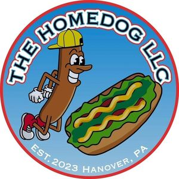

Trade Mark Journal No.2026/011 13 March 2026
WO0000001904124 (25,43)
Office of origin: United States of America

The mark consists of a circular logo with a red outer ring and a light blue inner circle, Within the light blue circle, a brown cartoon hot dog character outlined in black with skinny arms and legs, white teeth, black eyebrows, white and black eyes, wearing a yellow and black backward baseball cap, grey gloves outlined in black, and red and white sneakers outlined in black, is depicted running towards the right side of the logo, To the right of the character, a prepared brown hot dog bun outlined in black with green relish, red ketchup, and yellow mustard, all with a black border, is shown, Arched along the top inner edge of the red ring, the text "THE HOMEDOG LLC" is written in black, bold, uppercase letters with white, light blue and red outlines, Arched along the bottom inner edge of the red ring, the text "EST. 2023 HANOVER, PA" is written in white, bold, uppercase letters.
Protection of this mark shall give no rights to the exclusive use of the words "LLC," "EST. 2023" and "HANOVER, PA".
The mark contains the colours black, light blue, red, brown, yellow, green, white, grey and blue.
The mark consists of a circular logo with a red outer ring and a light blue inner circle. Within the light blue circle, a brown cartoon hot dog character outlined in black with skinny arms and legs, white teeth, black eyebrows, white and black eyes, wearing a yellow and black backward baseball cap, grey gloves outlined in black, and red and white sneakers outlined in black, is depicted running towards the right side of the logo. To the right of the character, a prepared brown hot dog bun outlined in black with green relish, red ketchup, and yellow mustard, all with a black border, is shown. Arched along the top inner edge of the red ring, the text "THE HOMEDOG LLC" is written in black, bold, uppercase letters with white, light blue and red outlines. Arched along the bottom inner edge of the red ring, the text "EST. 2023 HANOVER, PA" is written in white, bold, uppercase letters.
- Class 25
- Hats; shirts; T-shirts.
- Class 43
- Mobile café services for providing food and drink; providing of food and drink via a mobile truck; mobile restaurant services.
The Homedog LLC
Representative: Joshua M. Gerben Gerben Perrott PLLC, 1050 Connecticut Ave NW, Suite 500, Washington, DC 20036, UNITED STATES OF AMERICA